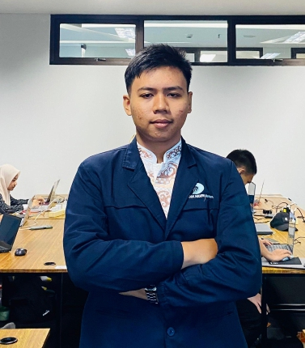

HERMANSA
Web Developer | Software Engineer
Email: hermansa098@gmail.com
Alamat: INDONESIA, Kota Batam, bengkong harapan II block O
Riwayat Pendidikan
- SDN 011 Batam
- SMP 30 Batam
- SMA 8 Batam jurusan IPS
- POLITEKNIK NEGRI BATAM Jurusan Teknik Informatika Prodi D4-Teknologi Rekayasa Perangkat Lunak (2024 - Sekarang)
Riwayat Pengerjaan Proyek
Skillset
Programming Languages
- JavaScript
- Python
- PHP
- HTML
Tools
- Git & GitHub
- Visual Studio Code
- Figma
- Canva
Soft Skills
- Komunikasi
- Problem Solving
- Analisis